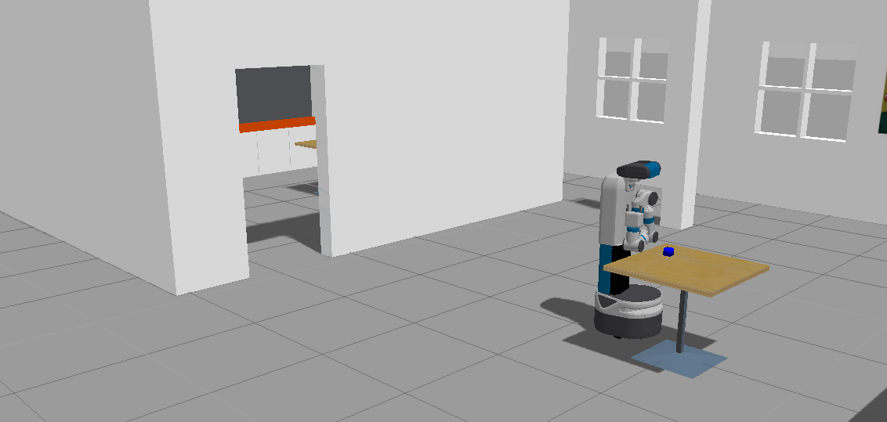
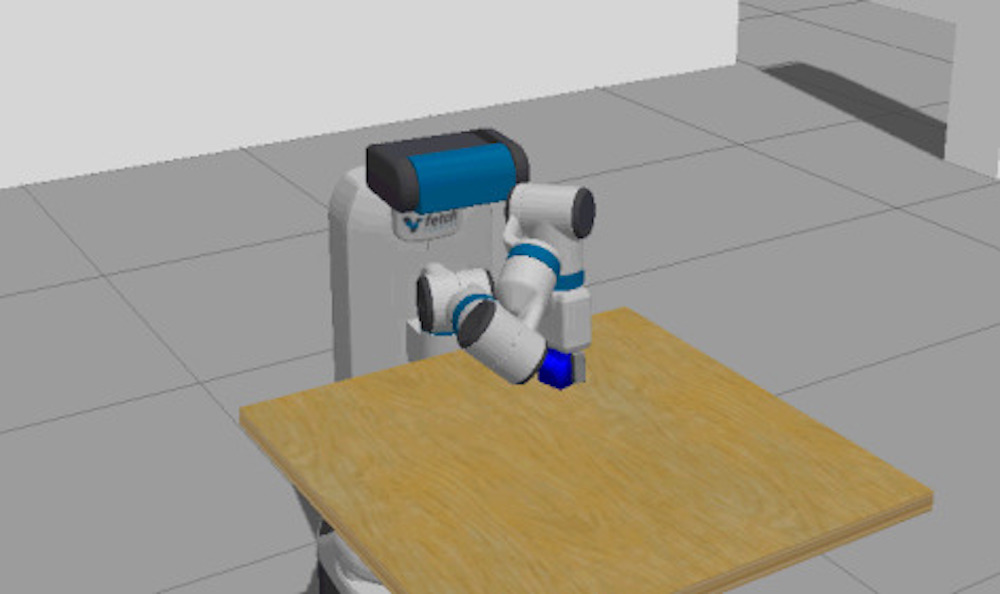
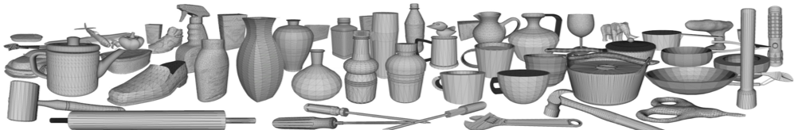
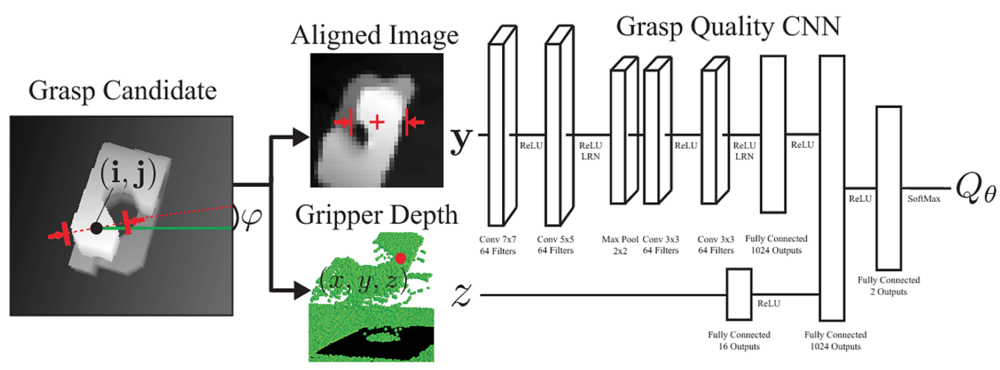
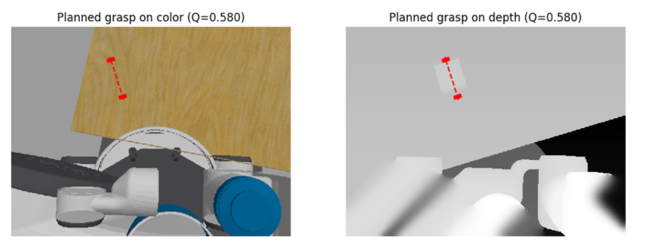
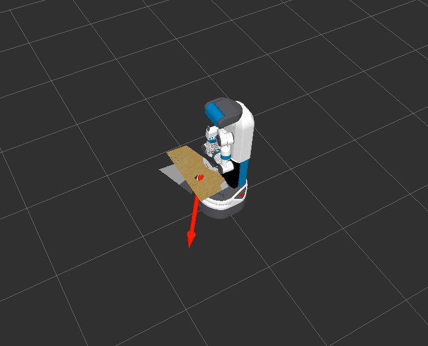

FetchIt - Grasping with Fetch
In collaboration with Victor Aladele & Matthias Mayer

This project is completed as a part of Dr. Frank Dellaert's
Mobile Manipulation class.
Problem Statement
Objective is to pick up an object from a table in the Simulation with Fetch Robot, the following are the intermediary steps:
- Segment the table with objects
- Use DexNet and GQ-CNN to generate the grasp proposal
- Execute the proposed grasp with MoveIt!
Tooling

MoveIt - the ROS library for planning and executing robot motions. It handles commands that plan the movement of the manipulator to the pose suggested by Dex-Net and executes the grasps and lift motions.

Dex-Net - a dataset of 3D objects, their simulated projection to RGB-D images and associated labels of possible grasps and their quality, which were derived mathematically from the underlying 3D model. With the help of these images and ground truth, a CNN was trained to judge a proposed grasp’s quality, which is called the Grasp Quality (GQ) CNN.

GQ-CNN was used to find the best grasp orientation for a given object as seen by the robot, by randomly sampling antipodal points within the depth image, judging them with GQ-CNN and executing the best feasible one. We use this work by running their grasp planner to find the best approach to and grasp of the object on the table.
Approach
The implementation of this grasping system follows a modularized approach based on ROS nodes. The two major ones implemented are an image processor, which employs GQ-CNN to plan a grasp in the depth image of the table, and a grasp executer, which receives a grasping pose and approach direction from the image processor and executes these with fetch’s manipulator.Image Processor
*Gazebo had issues rendering the cube in the image of the left, the grasp is based on depth perception only
The processing consists of three major steps. Firstly, the depth image is retrieved via the corresponding ROS topic and preprocessed, such that the only grasps on the table surface are considered. This selection is based on the expectation that the table will fill a major part of the robot’s field of view and therefore can be selected by thresholding about the maximum within the depth histogram. A binary closing is employed to remove smaller fragments which often occur from the robot seeing parts of itself. Secondly, GQ-CNN and a gradient-free optimization, called the cross-entropy method, are used to find the best possible grasp. This step mostly follows Dex-Net 2.0: Deep Learning to Plan Robust Grasps. To find a good grasp the optimization is primed with antipodal grasps based on depth gradients. Based on these iterations of evaluation with GQ-CNN and a refinement take place. Within the refinement, the best grasps according to GQ-CNN are transformed into a distribution where similar new grasps can be drawn from. These two steps are repeated for a few times to find a good grasp. Thirdly, the best grasp from step two, which still is within the image plane and encoded as orientation, middle point and depth relative to the camera, is projected back into a 3D pose. This is done with tf and transformations from the head-mounted camera to the robot base, published by the robot simulation. The final result is a place and orientation of the gripper in 3D space, relative to the robot base. This pose is then published as a stamped pose message, where the pose is encoded with cartesian coordinates and a unit quaternion.Grasp Executor
The grasp executor receives the planned grasp from the Image Processor. It calculates the approach by following the grasp’s poses negative x-Direction for 30 cm. This is the first place the robot tries to reach while avoiding the table with its arm. Than the manipulator is kept in the final pose and moves slowly toward the planned grasp. Once there, the gripper is closed and the arm is retracted in the opposite direction of the approach.